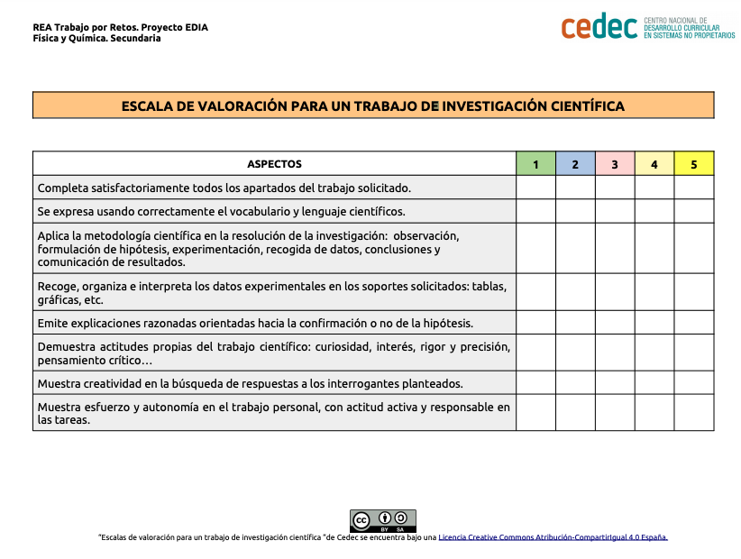

Utilizando la energía calorifica
Es un hecho conocido que la energía solar es una de las alternativas más sostenibles para la producción de energía. Pero ¿para qué y cómo se utiliza la energía solar?, ¿Qué podemos obtener del Sol? Principalmente, dos cosas: calor y electricidad.

Podemos calentar el agua de nuestras viviendas utilizando energía solar térmica. La energía solar térmica nos permite obtener calor al calentar un fluido mediante la energía procedente del sol, posteriormente, este fluido calentará el agua de la vivienda mediante un intercambiador de calor.
Sabemos cómo obtener energía limpia ¿Cuántos son nuestros gastos de agua caliente y nuestras necesidades energéticas solares? Vamos a investigarlo y debatir sobre la eficacia en su utilización.
Investigando la eficiencia de la energía solar para producir agua caliente
- Duración:
- Tres sesiones
- Agrupamiento:
- Pequeño y gran grupo
Vamos a calcular nuestros gastos de agua caliente para saber qué cantidad de energía necesitamos, las prestaciones de nuestras placas solares para producir esa energía y debatiremos sobre la eficacia de esta energía. Para ello realizaremos dos actividades en grupo y debatiremos sobre ellas.

¡Adelante! ¡Nos ponemos manos a la obra!
Actividad 1: Estimación de la demanda de agua caliente en el grupo
En cada grupo calculamos nuestros gastos de agua caliente y para ello realizaremos un cuestionario con la ayuda de una ficha informativa.
Recabamos información
El profesor o profesora nos entrega la siguiente información:
|
INFORMACIÓN SOBRE CONSUMO DE AGUA Y ENERGÍA |
|
| ACTIVIDAD | CONSUMO |
| Una ducha | 8 litros minuto |
| Una bañera normal | 230 litros |
| Lavar los dientes | 30 litros grifo abierto |
| Lavar las manos | 1 litro |
| Velocidad de flujo de un grifo normal | 10 litros por minuto |
|
Capacidad de un contenedor doméstico (Por ejemplo una pila de fregar) |
De 15 a 20 litros |
| Para calentar 1 litro de agua de 10ºC a 60ºC | Se requiere una cantidad de energía de 0,2MJ |
* La temperatura del agua caliente se toma 60ºC
Recuerda: 1MJ = 106J
Realizamos el cuestionario
A continuación cada grupo completa su cuestionario de consumo de agua caliente.
|
CUESTIONARIO: Consumo de agua caliente en la higiene personal |
|
|
¿Cuántas duchas tomas al día? |
|
|
¿Cuántos minutos pasa bajo la ducha? |
|
|
¿Cuántos baños de bañera completa haces a la semana? |
|
|
¿Cuántas veces te lavas los dientes al día? |
|
|
¿Cuántas veces te lavas las manos al día? |
|
|
¿Cuántas veces te lavas el pelo a la día? |
|
|
¿Cuánto tiempo empleas en lavarte el pelo? |
|
Organizamos los datos
| Gastos: Litros de agua gastados en total | |
| Duchas | |
| Baños | |
| Lavados de manos | |
| Lavados de pelo | |
| Lavado de dientes | |
Calculamos los gastos de energía
¿Cuánta energía se necesita diariamente para producir agua caliente en el grupo?: _______________________________
*Recuerda que los datos de la bañera son mensuales y los datos de la energía son al día.
Cotejamos datos con el resto de los grupos.
Actividad 2: Nos informamos sobre placas solares y energía
Un panel solar típico puede proporcionar entre 250W y 300W de energía. Sin embargo, es cada vez más habitual ver paneles domésticos de potencia superior, como 500W y también algunos de menor capacidad (como pueden ser 150W).
Esto nos puede servir para saber fácilmente los kWh que produce un panel solar cada día. Si cogemos un panel típico de unos 300W, esto significa que por cada hora de sol nos va a generar esa potencia. De este modo, si calculamos un día soleado de primavera, por ejemplo, en una zona cálida, el cálculo sería:
300W x 5 horas de sol al día = 1500W o lo que es lo mismo, 1,5 kWh al día.
Calculamos la energía que proporciona los paneles solares, suponiendo que tenemos 6 horas de sol al día y tenemos 3 paneles de 300W cada uno:
|
Energía de 3 paneles solares durante un día de 6 horas de sol en primavera |
Comparamos la energía que nos proporciona los 3 paneles solares en un día de seis horas de sol en primavera con la cantidad de energía que necesitamos para producir agua caliente de uso domestico:
|
Energía que necesitamos para producir nuestro agua caliente domestico |
Energía que nos proporcionan nuestros paneles solares en un día de seis horas de sol en primavera |
Conclusión |
Debatimos
Vamos a debatir la eficiencia de la energía solar para preparar a gua calienta.
Preparamos el debate:
- Tenemos en cuenta nuestras necesidades de agua caliente y la energía que nos proporciona los tres paneles solares durante 6 horas de sol en primavera.
- Además nos informamos sobre energía solar.
Debatimos y utilizamos las siguientes preguntas:
- ¿En nuestro caso, es suficiente la energía solar para producir agua caliente?
- ¿Todas las épocas del año tienen las mismas horas de sol?
- ¿Podría ser necesario fuentes alternativas en alguna época del año?¿Por qué?
- ¿Cómo contribuye el uso de la energía solar a garantizar el desarrollo sostenible?
- ¿Estaría justificado invertir en paneles solares para la preparación de agua caliente?
Evaluación y reflexión
Una vez que hemos finalizado la tarea, es un buen momento para reflexionar en nuestro diario de aprendizaje. Algunas sugerencias pueden ser:
- ¿Qué he aprendido?
- ¿Qué me ha sorprendido más de todo el proceso? ¿Por qué?
- ¿He cambiado alguna idea previa? ¿Cuál?
- ¿Qué me ha resultado más difícil? ¿Por qué?
Evaluación
Utilizaremos las siguientes escalas de valoración:
1.-Escala para un debate científico (descargar en formato editable odt y pdf).
.png)
2.-Escala de valoración para una investigación científica (descargar en formato editable odt y pdf)
